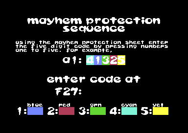

<meta charset="utf-8">
<meta name="viewport" content="width=device-width, initial-scale=1">
<title>Mayhem in Monsterland</title>
<link rel="preconnect" href="https://fonts.googleapis.com">
<link rel="stylesheet" href="https://fonts.googleapis.com/css2?family=Lato:wght@400;700;900&family=IBM+Plex+Mono:wght@400;500&display=swap">
<style>
:root{
  --bg:#23262d; --paper:#e9e7e1; --surface:#ffffff; --surface-2:#f1efea; --line:#d5d3cc; --line-soft:#e0ded8;
  --ink:#2f3136; --ink-soft:#55585f; --ink-mute:#80838a;
  --link:#1f5fa8; --link-hover:#154480; --accent:#1f5fa8;
  --amber:#c25a00; --cyan:#1f5fa8; --coral:#d04a3a; --green:#2a8a4a; --violet:#4a5bd6; --hl:#fff0c2;
  --chip:#2f3136; --chip-ink:#ffffff;
  --c64blue:#40318d; --c64grey:#686868;
  --fd:'Lato',system-ui,sans-serif; --fb:'Lato',system-ui,sans-serif; --fm:'IBM Plex Mono',ui-monospace,Menlo,monospace;
  --col:1080px; --gx:68px; --fs:17px; --lh:1.6; --hw:900; --h1:46px; --h2:26px; --sy:48px; --pp:26px; --r:10px;
  --plate-shadow:0 1px 2px rgba(0,0,0,.05),0 4px 14px rgba(0,0,0,.05);
}
*{box-sizing:border-box}
html{background:var(--bg);min-height:100%}
body{background:var(--paper);color:var(--ink);font-family:var(--fb);font-size:var(--fs);line-height:var(--lh);max-width:var(--col);margin:0 auto;min-height:100vh;padding:0 0 4rem}
h1,h2,h3{font-weight:var(--hw);letter-spacing:-.01em;text-wrap:balance;color:var(--ink);margin:0}
.wrap{padding:0 var(--gx)}
.hero{padding:48px var(--gx) 8px;text-align:left}
.eyebrow{font-family:var(--fm);font-size:12px;letter-spacing:.08em;text-transform:uppercase;color:var(--ink-mute);margin:0 0 10px}
.hero h1{font-size:var(--h1);line-height:1.15;letter-spacing:-.02em;margin:0 0 14px}
.hero .sub{margin:0 0 .6em;color:var(--ink-soft)}
section{padding:var(--sy) 0 24px}
section:last-of-type{border-bottom:none}
.fig{font-family:var(--fm);font-size:12px;letter-spacing:.08em;text-transform:uppercase;color:var(--ink-mute);margin:0 0 10px}
h2.t{font-size:var(--h2);margin-bottom:12px}
.lede{color:var(--ink-soft);margin:0 0 30px}
.plate{background:var(--surface);border:1px solid var(--line);border-radius:var(--r);padding:var(--pp);box-shadow:var(--plate-shadow)}
.cap{font-size:14px;color:var(--ink-mute);margin-top:14px;line-height:1.55}
.cap b{color:var(--ink);font-weight:700}
code{font-family:var(--fm);font-size:.82em;background:var(--chip);color:var(--chip-ink);border-radius:4px;padding:2px 6px;white-space:nowrap}

.mim-row{display:flex;flex-wrap:wrap;gap:10px 14px;align-items:center;margin:12px 0 0;font-family:var(--fm);font-size:13px;color:var(--ink-soft)}
.mim-row label{display:flex;gap:6px;align-items:center}
.mim-btn{font:inherit;font-family:var(--fm);font-size:13px;background:var(--surface);border:1px solid var(--line);border-radius:6px;padding:5px 12px;color:var(--ink);cursor:pointer}
.mim-btn:hover{border-color:var(--ink-mute)}
.mim-btn.mim-on{background:var(--chip);color:var(--chip-ink);border-color:var(--chip)}
.mim-out{font-family:var(--fm);font-size:13px;color:var(--ink);margin:10px 0 0;min-height:1.5em}
.mim-tbl{border-collapse:collapse;font-size:14px;width:100%}
.mim-tbl th,.mim-tbl td{text-align:left;vertical-align:top;padding:6px 10px;border-bottom:1px solid var(--line-soft)}
.mim-tbl th{font-weight:700;color:var(--ink-soft)}
.mim-tbl td.mim-n{font-family:var(--fm);font-size:13px;white-space:nowrap}
.mim-wide{overflow-x:auto}
.mim-panel{font-family:var(--fm);background:#000;color:#fff;border-radius:6px;padding:10px 14px;display:inline-block;letter-spacing:.08em;font-size:18px;line-height:1.5}
.mim-panel b{color:#edf171;font-weight:500}
.mim-form{display:flex;flex-wrap:wrap;gap:10px 16px;align-items:center;font-family:var(--fm);font-size:13px;color:var(--ink-soft)}
.mim-form input,.mim-form select{font:inherit;font-size:13px;padding:4px 6px;border:1px solid var(--line);border-radius:6px;background:var(--surface);color:var(--ink)}
.mim-form input{width:8.5em}
.mim-keys{display:flex;gap:8px;margin:0 0 14px}
.mim-keys .mim-btn{font-size:18px;padding:8px 18px}
.mim-seq{display:grid;grid-template-columns:repeat(25,1fr);gap:3px;margin:6px 0 0}
.mim-seq span{font-family:var(--fm);font-size:12px;text-align:center;padding:4px 0;border-radius:3px;background:var(--line-soft);color:var(--ink-mute)}
.mim-seq span.mim-done{background:var(--green);color:#fff}
.mim-seq span.mim-next{outline:2px solid var(--ink)}
.mim-imgs{display:grid;grid-template-columns:1fr 1fr;gap:14px}
.mim-imgs img{width:100%;height:auto;image-rendering:pixelated;border-radius:4px;display:block}
.mim-list li{margin:0 0 .7em}
@media (max-width:700px){:root{--gx:18px;--pp:14px;--h1:36px}.mim-imgs{grid-template-columns:1fr}.mim-seq{grid-template-columns:repeat(13,1fr)}}
</style>
<!-- tabs -->
<header class="hero">
  <p class="eyebrow">1993 · Apex Computer Productions</p>
  <h1>Mayhem in Monsterland</h1>
  <p class="sub">What the game keeps from the player: 25 keys on the title screen that stop the lives going down, a lives counter that falls from 10 to the last life in one death, a loading screen that gives the wrong quota, and the answers to the code sheet, stored in the game itself.</p>
</header>
<main class="wrap">

<section id="cheat" data-part="jellyland">
  <p class="fig">01 · The cheat</p>
  <h2 class="t">Secret: 25 keys on the title screen give infinite lives</h2>
  <p class="lede">Typing a sequence of 25 digits from 1 to 5 on the title screen stops the game from taking lives away. Nothing on the screen asks for it.</p>
  <div class="plate" id="mim-cheat" tabindex="0" aria-label="Type the cheat with the buttons or the keys 1 to 5">
    <div class="mim-keys" id="mim-cheatkeys"></div>
    <div class="mim-seq" id="mim-cheatseq"></div>
    <p class="mim-out" id="mim-cheatout"></p>
    <div class="mim-row"><button type="button" class="mim-btn" id="mim-cheatnext">Press the next key for me</button><button type="button" class="mim-btn" id="mim-cheatreset">Start again</button></div>
    <p class="cap">The buttons, or the keys 1 to 5 while this panel has the focus, run a port of the title's key check <code>$9EF9</code>, one frame with the key down and one with it up. The port was run beside the game's code in a 6502 simulator, with the keyboard answered from the keys held, over 400 runs of 600 frames: sequences typed with wrong keys, keys held for several frames and two keys at once. It agreed on every frame. In the emulator, the 25th key wrote the <code>RTS</code> and a stage whose clock ran out then left the lives at 03, where the same stage without the cheat lost one; the first 24 keys were set from the code there rather than typed.</p>
  </div>
  <p>The title screen runs from Jellyland's file, and each frame it calls <code>$9EF9</code>, which reads the keys 1 to 5 and compares each new press with the next entry of the sequence at <code>$9EE0</code>: 2 1 5 4 3 5 1 4 3 2 5 2 3 1 4 4 1 2 5 3 2 4 3 5 1. A correct key moves the position on; a wrong one sets it back to the start, and does not count as the first key of a new attempt. After the 25th, the routine writes <code>$60</code>, an <code>RTS</code>, over the first byte of the engine's <code data-part="engine">$BDC1</code>, the routine that takes a life off. The only sign is the top-score line on the title, whose three sprites change colour (<code>$93A7</code>).</p>
  <p>The cheat lasts until the title screen starts again, which puts the original byte back (<code>$A58B</code>). The game can still end: Q in the pause sets the lives to <code>$FF</code> directly (<code data-part="engine">$1EB4</code>), and that is game over.</p>
</section>

<section id="lives" data-part="engine">
  <p class="fig">02 · Lives</p>
  <h2 class="t">Bug: losing a life at 10 lives leaves 00</h2>
  <p class="lede">The lives counter is two decimal digits. Taking a life from 10 leaves 00, the last life, so the counter drops by ten at once. The same happens at 20, 30 and every other multiple of ten.</p>
  <div class="plate">
    <div class="mim-panel" id="mim-lives"></div>
    <div class="mim-row"><button type="button" class="mim-btn" id="mim-lose">Lose a life (<code>$BDC1</code>)</button><button type="button" class="mim-btn" id="mim-gain">Gain a life (<code>$3866</code>)</button><button type="button" class="mim-btn" id="mim-ten">Set 10</button><button type="button" class="mim-btn" id="mim-three">Set 03</button></div>
    <p class="mim-out" id="mim-livesout"></p>
    <p class="cap">The buttons run ports of the two routines. Run beside the game's code in a 6502 simulator, from every pair of digits with the tens 0 to 10 and the units 0 to 9 and from the game-over value, both ports left the same digits as the game: 224 cases.</p>
  </div>
  <p><code>$BDC1</code> subtracts one from the units. When the units are 0 it subtracts one from the tens instead and leaves the units at 0, where it should have set them to 9 (<code>$BDCC</code>-<code>$BDD1</code>). 10 becomes 00. The game ends only when a life is lost at 00, which turns the tens into <code>$FF</code> (<code>$3BAC</code>), so 00 is one more life and not game over. From 10, the second death ends the game, where it should have taken the eleventh.</p>
  <p>Ten lives is within reach. A new game starts with 03, and every land the loader brings in adds one more (<code>$CC55</code> calls the same <code>$3866</code> as the extra-life awards), so a player who loses none arrives at Rockland with 07. Extra-life bonuses and every million points add the rest.</p>
</section>

<section id="loading-screens" data-part="cherryland">
  <p class="fig">03 · The loading screens</p>
  <h2 class="t">Bug: Cherryland's loading screen gives Rockland's star quota as 338, not 348</h2>
  <p class="lede">While a land loads, the screen shows its name and its two quotas. The quotas on the screen come from the land before.</p>
  <div class="plate">
    <div class="mim-wide"><table class="mim-tbl">
      <tr><th>Land loading</th><th>Its quotas as the loading screen gives them</th><th>Printed from</th><th>Dust<br><code>$903E</code>-<code>$9040</code></th><th>Star count starts at<br><code>$9041</code>-<code>$9043</code></th><th>Finish opens at<br><code>$904A</code>-<code>$904C</code></th><th>Stars to collect</th></tr>
      <tr><td>Jellyland</td><td class="mim-n">dust 10, stars 113</td><td>the engine, <code data-part="engine">$D77D</code></td><td class="mim-n">00 01 00</td><td class="mim-n">01 05 03</td><td class="mim-n">00 04 00</td><td class="mim-n">153 - 40 = 113</td></tr>
      <tr><td>Pipeland</td><td class="mim-n">dust 11, stars 231</td><td>Jellyland's file</td><td class="mim-n">00 01 01</td><td class="mim-n">03 03 01</td><td class="mim-n">01 00 00</td><td class="mim-n">331 - 100 = 231</td></tr>
      <tr><td>Spottyland</td><td class="mim-n">dust 15, stars 159</td><td>Pipeland's file</td><td class="mim-n">00 01 05</td><td class="mim-n">02 01 04</td><td class="mim-n">00 05 05</td><td class="mim-n">214 - 55 = 159</td></tr>
      <tr><td>Cherryland</td><td class="mim-n">dust 10, stars 250</td><td>Spottyland's file</td><td class="mim-n">00 01 00</td><td class="mim-n">03 00 00</td><td class="mim-n">00 05 00</td><td class="mim-n">300 - 50 = 250</td></tr>
      <tr><td>Rockland</td><td class="mim-n">dust 8, stars <b>338</b></td><td>Cherryland's file, <code>$9185</code></td><td class="mim-n">00 00 08</td><td class="mim-n">03 07 08</td><td class="mim-n">00 03 00</td><td class="mim-n">378 - 30 = <b>348</b></td></tr>
      <tr><td>The ending</td><td class="mim-n">"GAME COMPLETE"</td><td>Rockland's file</td><td class="mim-n">-</td><td class="mim-n">-</td><td class="mim-n">-</td><td class="mim-n">-</td></tr>
    </table></div>
    <p class="cap">The quota lines are text in each file at <code>$916F</code> and <code>$9185</code>. The other columns are the bytes the engine counts with, in each land's own file: three decimal digits each, one to a byte, as the panel shows them.</p>
  </div>
  <p>The star count on the panel does not start at zero. When the land turns happy, the engine loads the counter from <code>$9041</code>-<code>$9043</code> (<code data-part="engine">$3BC6</code>), every star Mayhem collects takes one off it (<code data-part="engine">$36ED</code>), and the finish line opens when it has come down to the number in <code>$904A</code>-<code>$904C</code> (<code data-part="engine">$374F</code>-<code data-part="engine">$3753</code>). The stars a player must collect are the difference between the two, and that difference is what the loading screen calls the star quota.</p>
  <p>The loader (<code data-part="engine">$CBAD</code>) prints the loading screen before it loads the land, so the quota lines cannot come from the land's own file: they are in the file of the land before it, at <code>$916F</code> and <code>$9185</code>, and a new game first copies Jellyland's lines into place from the engine (<code data-part="engine">$D76E</code>). The lines are text typed into each file, separate from the numbers the game counts with. Four of the five agree. Cherryland's says 338 for Rockland, which counts its stars from 378 down to 30, a quota of 348.</p>
  <p>Rockland's file carries lines for a land that does not exist: its loading line says "GAME COMPLETE", shown while the ending loads, and its quota lines say 12 and 365, which no screen prints.</p>
</section>

<section id="protection" data-part="engine">
  <p class="fig">04 · The protection</p>
  <h2 class="t">Secret: the answers to the code sheet are in the game</h2>
  <p class="lede">After the intro, the game asks for a code from the printed sheet that came in the box.</p>
  <div class="plate">
    <div class="mim-imgs"></div>
    <p class="cap">The protection screen, a screenshot from the emulator.</p>
  </div>
  <p>The protection screen gives a square of the sheet, such as F27, and wants the five colours printed there, typed as digits from 1 for blue to 5 for yellow. The answers are in the game, exclusive-ORed with <code>$45</code>: a table of 47 squares at <code>$4A00</code>-<code>$4B77</code>, and the five keys this boot expects, copied to <code data-part="">$017B</code> on the stack page (<code>$4594</code>-<code>$45A2</code> compares them). Three wrong codes send the game to <code>$C000</code>, which clears memory from <code>$040A</code> upward without end.</p>
  <p>The same file still carries some of the tools it was made with. Next to the answer table, the copy loaded from disk holds a small program the game never runs (<code>$4800</code>-<code>$49E1</code>): a link that let another computer write and read the Commodore's memory and start code over a cable in the user port, signed "DOWNLOAD BY JAZ" (<code>$49F0</code>). Beside it, a routine at <code>$4B7B</code> saved memory from <code>$0200</code> to <code data-part="">$A8FF</code> to the disk drive under the name GAME, which is exactly the span of the file on the disk, and the first bytes of that file are BASIC's input line, still reading <code>SYS 5632</code>: the command that started the link at <code data-part="">$1600</code>. The game clears this screen memory before play, so none of it is ever seen. Andy Roberts recalls working on Mayhem with an Amiga-based cross-development system, and a 1990 Commodore Format feature on Apex describes John Rowlands sending his code from another computer to the C64 through a "Programmer's Development System". Whether this link belonged to either, and who Jaz was, could not be found.</p>
</section>

<section id="extra-life" data-part="engine">
  <p class="fig">05 · The extra life</p>
  <h2 class="t">Bug: a million reached through the time bonus earns no extra life</h2>
  <p class="lede">The game gives an extra life each time the score passes a million. One award can pass a million without it: the 100,000 points of the SUPER TIME BONUS, when the score already has a 9 in its hundred-thousands.</p>
  <div class="plate" id="mim-score2"></div>
  <p><code>$350B</code> gives the life in two places. At <code>$3530</code> it gives one before adding anything when the award's own digit is the millions, which only the 1,000,000 award is. At <code>$355A</code>, inside the loop that carries into the digits above, it gives one when the hundred-thousands digit rolls over from 9 to 0. Every award below 100,000 that passes a million goes through that loop, and so does the life.</p>
  <p>The 100,000 award is the exception, because the hundred-thousands is its own digit. When that digit overflows, <code>$3541</code>-<code>$3548</code> take ten off it in place, and the carry loop starts one digit up, at the millions. The test at <code>$355A</code> watches for the hundred-thousands rolling over, and the loop never visits it. The score reaches its next million and the lives stay as they were.</p>
  <p>Only one award in the game is worth 100,000: the SUPER TIME BONUS of the stage-complete screen (<code>$BEAA</code>), paid when the clock reads 000 as that screen opens. No monster in the five lands carries event 14. No way to that screen with the clock at 000 was found. The clock stops the moment Mayhem crosses the finish line: it ticks only while the stage-complete flag <code>$1BC6</code> is clear (<code>$2016</code>), and the finish sets that flag earlier in the same pass (<code>$2B4C</code>). A clock that does reach 000 costs the life first (<code>$383F</code>). So the bonus, and the bug with it, looks out of a player's reach.</p>
</section>

<section id="more" data-part="engine">
  <p class="fig">06 · More from the code</p>
  <h2 class="t">Things a player who finished it would not know</h2>
  <ul class="mim-list">
    <li><b>The first touch is free.</b> Touching a monster the first time costs no life: it sets a flag and starts a grace count of <code>$64</code> while Mayhem flickers (<code>$B61D</code>). The count goes down only on every other call (<code>$EF4A</code>-<code>$EF4E</code>), so the grace lasts about 200 calls. The second touch costs the life (<code>$B5E4</code>). An extra life, the power-up or one of the bonuses clears the flag again (<code>$387D</code>).</li>
    <li><b>Some monsters cannot be jumped on.</b> A monster's kind below <code>$F7</code> is its strength, and a stomp takes off more the further Mayhem fell (<code>$342E</code>). Kinds <code>$FB</code> and <code>$F7</code> cannot be stomped at all (<code>$B59D</code>), <code>$FC</code> and <code>$FA</code> always hurt, and <code>$F8</code> hurts when walked into but dies to a stomp (<code>$B5B1</code>); a charge with the lightning power-up kills them (<code>$B5B9</code>).</li>
    <li><b>Monsters that come back pay nothing.</b> A defeated monster's record is marked (<code>$CB02</code>); if the same monster appears again it is removed without its item (<code>$C962</code>). The marks are cleared when a land starts (<code>$E595</code>).</li>
    <li><b>The ending goes back to the title by loading Jellyland.</b> Fire on the last screen of the ending takes the same road as game over: the engine reloads Jellyland from the disk, and Jellyland's file holds the title screen (<code>$CE66</code>, <code>$CBA5</code>, <code>$F45E</code>). There is no score screen.</li>
    <li><b>A copy of the cheat in Pipeland.</b> Pipeland's file has Jellyland's title code at <code data-part="pipeland">$9EC4</code>-<code data-part="pipeland">$9F3D</code>, the cheat's key check included, left over from the buffer the files were built in. Nothing calls it there.</li>
    <li><b>Poking for lives.</b> The German C64-Wiki gives <code>$BE15</code> as a poke for unlimited lives and <code>$37FD</code> for extra time. In this release the first lands in the lightning's timer and the second on the counter that stops the clock (<code>$37FD</code> is <code>DEC $1BAA</code>); the lives routine is at <code>$BDC1</code>. The wiki's invincibility poke at <code>$B61D</code> does hit its mark, the grace flag above.</li>
  </ul>
</section>

</main>
<footer style="margin:16px 0 0;padding:22px var(--gx) 0;border-top:1px solid #e0ded8;font-family:'IBM Plex Mono',ui-monospace,Menlo,monospace;font-size:12px;color:#80838a"><a href="https://github.com/gamesexplained/gamesexplained" aria-label="GitHub" style="display:inline-flex;align-items:center;justify-content:center;width:26px;height:26px;margin-left:8px;border:1px solid #e0ded8;border-radius:7px;background:#ffffff;color:#80838a;vertical-align:middle"><svg width="15" height="15" viewBox="0 0 24 24" fill="currentColor" aria-hidden="true"><path d="M12 .297c-6.63 0-12 5.373-12 12 0 5.303 3.438 9.8 8.205 11.385.6.113.82-.258.82-.577 0-.285-.01-1.04-.015-2.04-3.338.724-4.042-1.61-4.042-1.61C4.422 18.07 3.633 17.7 3.633 17.7c-1.087-.744.084-.729.084-.729 1.205.084 1.838 1.236 1.838 1.236 1.07 1.835 2.809 1.305 3.495.998.108-.776.417-1.305.76-1.605-2.665-.3-5.466-1.332-5.466-5.93 0-1.31.465-2.38 1.235-3.22-.135-.303-.54-1.523.105-3.176 0 0 1.005-.322 3.3 1.23.96-.267 1.98-.399 3-.405 1.02.006 2.04.138 3 .405 2.28-1.552 3.285-1.23 3.285-1.23.645 1.653.24 2.873.12 3.176.765.84 1.23 1.91 1.23 3.22 0 4.61-2.805 5.625-5.475 5.92.42.36.81 1.096.81 2.22 0 1.606-.015 2.896-.015 3.286 0 .315.21.69.825.57C20.565 22.092 24 17.592 24 12.297c0-6.627-5.373-12-12-12"/></svg></a><a href="https://discord.gg/3V9GWyRDWV" aria-label="Discord" style="display:inline-flex;align-items:center;justify-content:center;width:26px;height:26px;margin-left:8px;border:1px solid #e0ded8;border-radius:7px;background:#ffffff;color:#80838a;vertical-align:middle"><svg width="15" height="15" viewBox="0 0 24 24" fill="currentColor" aria-hidden="true"><path d="M20.317 4.3698a19.7913 19.7913 0 00-4.8851-1.5152.0741.0741 0 00-.0785.0371c-.211.3753-.4447.8648-.6083 1.2495-1.8447-.2762-3.68-.2762-5.4868 0-.1636-.3933-.4058-.8742-.6177-1.2495a.077.077 0 00-.0785-.037 19.7363 19.7363 0 00-4.8852 1.515.0699.0699 0 00-.0321.0277C.5334 9.0458-.319 13.5799.0992 18.0578a.0824.0824 0 00.0312.0561c2.0528 1.5076 4.0413 2.4228 5.9929 3.0294a.0777.0777 0 00.0842-.0276c.4616-.6304.8731-1.2952 1.226-1.9942a.076.076 0 00-.0416-.1057c-.6528-.2476-1.2743-.5495-1.8722-.8923a.077.077 0 01-.0076-.1277c.1258-.0943.2517-.1923.3718-.2914a.0743.0743 0 01.0776-.0105c3.9278 1.7933 8.18 1.7933 12.0614 0a.0739.0739 0 01.0785.0095c.1202.099.246.1981.3728.2924a.077.077 0 01-.0066.1276 12.2986 12.2986 0 01-1.873.8914.0766.0766 0 00-.0407.1067c.3604.698.7719 1.3628 1.225 1.9932a.076.076 0 00.0842.0286c1.961-.6067 3.9495-1.5219 6.0023-3.0294a.077.077 0 00.0313-.0552c.5004-5.177-.8382-9.6739-3.5485-13.6604a.061.061 0 00-.0312-.0286zM8.02 15.3312c-1.1825 0-2.1569-1.0857-2.1569-2.419 0-1.3332.9555-2.4189 2.157-2.4189 1.2108 0 2.1757 1.0952 2.1568 2.419 0 1.3332-.9555 2.4189-2.1569 2.4189zm7.9748 0c-1.1825 0-2.1569-1.0857-2.1569-2.419 0-1.3332.9554-2.4189 2.1569-2.4189 1.2108 0 2.1757 1.0952 2.1568 2.419 0 1.3332-.946 2.4189-2.1568 2.4189Z"/></svg></a><br>© Games Explained contributors. Write-ups, facts and symbol maps are available under <a href="https://creativecommons.org/licenses/by-sa/4.0/" style="color:#1f5fa8;text-decoration:none">CC BY-SA 4.0</a>; code under <a href="https://opensource.org/licenses/MIT" style="color:#1f5fa8;text-decoration:none">MIT</a></footer>
<script>
(function () {
'use strict';
const $ = (id) => document.getElementById(id);
const hex = (n, w) => '$' + n.toString(16).toUpperCase().padStart(w || 2, '0');
const fmt = (n) => n.toLocaleString('en-GB');

// The same ports as the How it works page's (index.html), which uses the score, lives and stars.
// <mim-ports>
// Ports of four of the game's routines, for the widgets below. Each works on a plain state object
// laid out as the game keeps the values; work/page/checks.js runs each beside the original code in
// the kit's 6502 simulator.
const MIM_PORTS = (function () {
  // score_add ($350B). Event y adds AMOUNT[y] at score digit DIGIT[y] ($34E7, $34F7); 0 is the
  // hundred-millions digit $CF78, 8 the units $CF80. st = {score: [9 digits], lives: [tens, units],
  // mult: $1B78}. Returns the addresses of the extra-life calls made, in order.
  const AMOUNT = [1, 5, 2, 1, 5, 1, 2, 3, 4, 5, 1, 2, 5, 8, 1, 1];
  const DIGIT = [8, 6, 6, 6, 7, 5, 5, 5, 5, 5, 4, 4, 4, 4, 3, 2];
  function scoreAdd(st, y) {
    const lives = [];
    let x = st.mult ? st.mult - 1 : 0;                 // $3521-$3527: passes = the multiplier, or 1
    for (;;) {
      const d = DIGIT[y];
      if (d === 2) { lifeAdd(st); lives.push(0x3534); }    // $3530: an event at the millions digit
      const v = (st.score[d] + AMOUNT[y]) & 0xFF;      // $3537-$353E
      st.score[d] = v;
      if (v >= 10) {                                   // $3541: the event's own digit overflows
        st.score[d] = v - 10;
        for (let k = d - 1; k >= 0; k--) {             // $354B: the carry, upward
          if (st.score[k] < 9) { st.score[k]++; break; }    // $3551, $3563
          st.score[k] = 0;
          if (k === 3) { lifeAdd(st); lives.push(0x355E); } // $355A: the hundred-thousands rolled over
        }
      }
      if (x === 0) break;                              // $3566-$3568
      x--;
    }
    return lives;
  }
  // life_add ($3866) and life_lose ($BDC1): two decimal digits, tens and units.
  function lifeAdd(st) {
    const u = st.lives[1] + 1;
    if (u >= 10) { st.lives[0] = (st.lives[0] + 1) & 0xFF; st.lives[1] = 0; } else st.lives[1] = u;
  }
  function lifeLose(st) {
    if (st.lives[1] === 0) st.lives[0] = (st.lives[0] - 1) & 0xFF;   // $BDCC-$BDD1: units stay 0
    else st.lives[1]--;
  }
  // The title's cheat ($9EF9), one frame. held: the set of keys (1-5) down. st = {pos: $9F18,
  // held: $9ED5, armed: whether $BDC1 holds RTS}. Keys are read 5 down to 1; key y is down when its
  // row's column byte equals the one value that means y alone ($9ED6, $9EDA), so two keys of one
  // row (1 and 2, or 3 and 4) held together read as neither.
  const SEQ = [2, 1, 5, 4, 3, 5, 1, 4, 3, 2, 5, 2, 3, 1, 4, 4, 1, 2, 5, 3, 2, 4, 3, 5, 1];
  const ROW = [0, 7, 7, 1, 1, 2], COL = [0, 0, 3, 0, 3, 0];
  function cheatFrame(st, held) {
    const colsOf = (row) => { let v = 0xFF; for (const k of held) if (ROW[k] === row) v &= ~(1 << COL[k]); return v & 0xFF; };
    for (let y = 5; y >= 1; y--) {
      if (colsOf(ROW[y]) !== (0xFF & ~(1 << COL[y]))) continue;
      if (st.held) return;                             // $9F0F: still the same press
      st.held = 1;
      if (y === SEQ[st.pos]) {
        if (st.pos + 1 >= 25) { st.armed = true; return; }   // $9F2C: RTS over $BDC1; pos stays 24
        st.pos++;
      } else st.pos = 0;                               // $9F26
      return;
    }
    st.held = 0;                                       // $9F09: no key of the five
  }
  // The spinning stars ($3AEE), one pass of the frame-end interrupt in the happy land.
  // st = {wait: $1B75, frame: $1B76, step: $1B77, speed: $EE10}. A star image lasts speed + 1
  // passes; after the 20 images of a turn the speed steps on through the 26 entries of PROFILE
  // ($EDF5), and speed is also the score event a star collected now gives (1 = 500 ... 5 = none).
  const PROFILE = [5, 4, 4, 3, 3, 3, 2, 2, 2, 2, 2, 1, 1, 1, 1, 2, 2, 2, 2, 2, 3, 3, 3, 4, 4, 5];
  function starPass(st) {
    st.wait = (st.wait - 1) & 0xFF;
    if (st.wait < 0x80) return false;                  // $3AF1: BPL
    st.wait = st.speed;
    let x = st.frame - 1;
    if (x < 0) {
      x = st.step - 1;
      if (x < 0) x = 25;
      st.step = x;
      st.speed = PROFILE[x];
      x = 19;
    }
    st.frame = x;
    return true;                                       // image st.frame copied to $FB-$FE
  }
  return { AMOUNT, DIGIT, SEQ, PROFILE, scoreAdd, lifeAdd, lifeLose, cheatFrame, starPass };
})();
// </mim-ports>

// ---- the score: the same widget as the How it works page's
const EVENTS = MIM_PORTS.AMOUNT.map((a, y) => a * Math.pow(10, 8 - MIM_PORTS.DIGIT[y]));
function scoreWidget(el, opts) {
  el.innerHTML =
    '<div class="mim-form"><label>Score <input type="text" inputmode="numeric" maxlength="9"></label>' +
    '<label>Award <select class="mim-ev"></select></label>' +
    '<label>Multiplier <select class="mim-mu"><option value="0">none</option><option>2</option><option>3</option><option>4</option><option>5</option></select></label>' +
    '<button type="button" class="mim-btn mim-add">Add (<code>$350B</code>)</button></div>' +
    (opts.cases ? '<div class="mim-row mim-cases"></div>' : '') +
    '<p class="mim-out" style="margin-top:14px"><span class="mim-panel mim-p"></span></p><p class="mim-out mim-why"></p>' +
    '<p class="cap">' + opts.cap + '</p>';
  const inp = el.querySelector('input'), ev = el.querySelector('.mim-ev'), mu = el.querySelector('.mim-mu');
  EVENTS.forEach((p, y) => { const o = document.createElement('option'); o.value = y; o.textContent = y + ': ' + fmt(p); ev.appendChild(o); });
  const st = { score: Array(9).fill(0), lives: [0, 3], mult: 0 };
  const show = (msg) => {
    el.querySelector('.mim-p').innerHTML = 'SCORE <b>' + st.score.join('') + '</b> &nbsp; 1UP x<b>' + st.lives.join('') + '</b>';
    el.querySelector('.mim-why').textContent = msg || '';
    inp.value = st.score.join('');
  };
  const set = (s, y, m) => { st.score = s.padStart(9, '0').slice(-9).split('').map(Number); ev.value = y; mu.value = m; st.lives = [0, 3]; show(''); };
  inp.addEventListener('change', () => set(inp.value.replace(/\D/g, ''), ev.value, mu.value));
  el.querySelector('.mim-add').addEventListener('click', () => {
    st.score = inp.value.replace(/\D/g, '').padStart(9, '0').slice(-9).split('').map(Number);
    st.mult = +mu.value;
    const y = +ev.value, before = st.score.join(''), calls = MIM_PORTS.scoreAdd(st, y);
    const crossed = Math.floor(+st.score.join('') / 1e6) - Math.floor(+before / 1e6);
    let msg = fmt(+before) + ' + ' + (st.mult > 1 ? st.mult + ' × ' : '') + fmt(EVENTS[y]) + ': ';
    if (calls.length) msg += calls.map((a) => 'extra life from ' + hex(a, 4)).join(', ') + '.';
    else if (crossed > 0) msg += 'the score passed a million and no extra life was given.';
    else msg += 'no extra life.';
    show(msg);
  });
  if (opts.cases) {
    const box = el.querySelector('.mim-cases');
    opts.cases.forEach(([label, s, y]) => {
      const b = document.createElement('button'); b.type = 'button'; b.className = 'mim-btn'; b.textContent = label;
      b.addEventListener('click', () => { set(s, y, 0); el.querySelector('.mim-add').click(); });
      box.appendChild(b);
    });
  }
  set(opts.score, opts.event, 0);
}
const SCORECAP = 'The button runs a port of <code>$350B</code>, with the lives starting at 03. Run beside the game\'s code in a 6502 simulator on the play snapshot, the port left the same score and lives, and gave the same extra lives, in 27,648 cases: 432 scores (every digit at 0, 8 and 9, all nines, and 400 at random, weighted to 9) with each of the 16 awards and four multipliers.';
scoreWidget($('mim-score2'), {
  score: '000900000', event: 14,
  cases: [['900,000 + 100,000', '000900000', 14], ['990,000 + 10,000', '000990000', 10], ['900,000 + 1,000,000', '000900000', 15]],
  cap: 'The three buttons are the cases run on the game\'s own code in the simulator, which gave the same results: 03 lives after the first, 04 after the other two. ' + SCORECAP,
});

// ---- the lives counter
(function () {
  const st = { lives: [0, 3] };
  const show = (msg) => {
    const over = st.lives[0] === 0xFF;
    $('mim-lives').innerHTML = over ? '<b>GAME OVER</b>' : '1UP x<b>' + st.lives[0] + st.lives[1] + '</b>';
    $('mim-livesout').textContent = msg || '';
    $('mim-lose').disabled = over; $('mim-gain').disabled = over;
  };
  $('mim-lose').addEventListener('click', () => {
    const b = '' + st.lives[0] + st.lives[1];
    MIM_PORTS.lifeLose(st);
    show(st.lives[0] === 0xFF ? 'A life lost at 00: the tens became $FF, which $3BAC reads as game over.' : b + ' less one leaves ' + st.lives[0] + st.lives[1] + '.');
  });
  $('mim-gain').addEventListener('click', () => { MIM_PORTS.lifeAdd(st); show(''); });
  $('mim-ten').addEventListener('click', () => { st.lives = [1, 0]; show(''); });
  $('mim-three').addEventListener('click', () => { st.lives = [0, 3]; show(''); });
  show('');
})();

// ---- the title's cheat
(function () {
  const plate = $('mim-cheat'), seq = $('mim-cheatseq'), keys = $('mim-cheatkeys');
  const st = { pos: 0, held: 0, armed: false };
  MIM_PORTS.SEQ.forEach((k) => { const s = document.createElement('span'); s.textContent = k; seq.appendChild(s); });
  for (let k = 1; k <= 5; k++) {
    const b = document.createElement('button'); b.type = 'button'; b.className = 'mim-btn'; b.textContent = k;
    b.addEventListener('click', () => press(k)); keys.appendChild(b);
  }
  let last = '';
  function show() {
    [...seq.children].forEach((s, i) => { s.classList.toggle('mim-done', st.armed || i < st.pos); s.classList.toggle('mim-next', !st.armed && i === st.pos); });
    $('mim-cheatout').textContent = st.armed
      ? 'Cheat on: $BDC1 now begins with RTS ($60), so losing a life takes none.'
      : (last ? last + ' ' : '') + st.pos + ' of 25 keys right (the position byte, $9F18).';
  }
  function press(k) {
    const before = st.pos, was = st.armed;
    MIM_PORTS.cheatFrame(st, new Set([k]));   // a frame with the key down
    MIM_PORTS.cheatFrame(st, new Set());      // and one with it up
    last = st.armed && !was ? '' : st.pos > before || (st.armed && was) ? 'Key ' + k + ': right.' : 'Key ' + k + ': wrong, back to the start.';
    show();
  }
  plate.addEventListener('keydown', (e) => { if (e.key >= '1' && e.key <= '5') { e.preventDefault(); press(+e.key); } });
  $('mim-cheatnext').addEventListener('click', () => { if (!st.armed) press(MIM_PORTS.SEQ[st.pos]); });
  $('mim-cheatreset').addEventListener('click', () => { st.pos = 0; st.held = 0; st.armed = false; last = ''; show(); });
  show();
})();
})();
</script>
